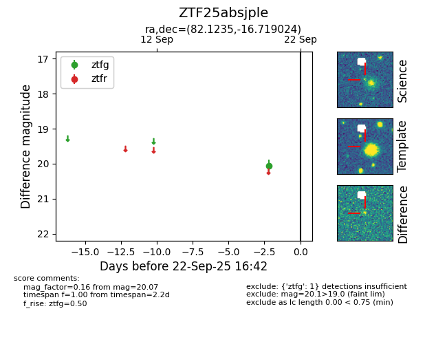

FINK: ZTF25absjple
Lasair: ZTF25absjple
ALeRCE: ZTF25absjple
ZTF25absjple (ztf,fink)
equatorial (ra, dec) = (82.1235,-16.71902)
galactic (l, b) = (219.3914,-25.65602)

last ztfg=20.07
1 ztfg detections